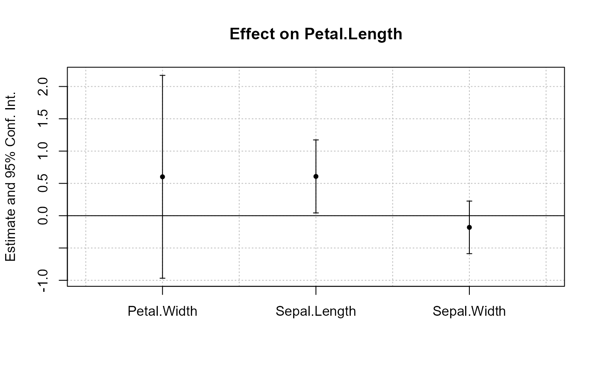
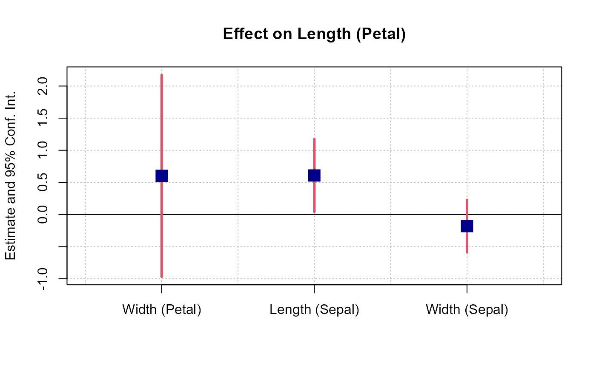
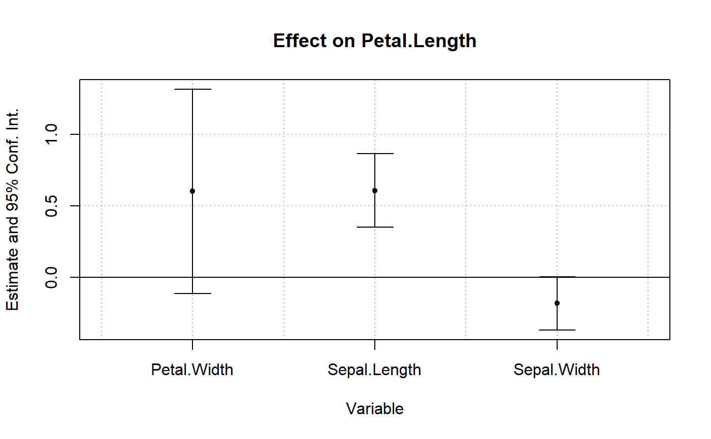

You can set the default values of most arguments of coefplot with this function.
setFixest_coefplot(
style,
horiz = FALSE,
dict = getFixest_dict(),
keep,
ci.width = "1%",
ci_level = 0.95,
pt.pch = 20,
pt.bg = NULL,
cex = 1,
pt.cex = cex,
col = 1:8,
pt.col = col,
ci.col = col,
lwd = 1,
pt.lwd = lwd,
ci.lwd = lwd,
ci.lty = 1,
grid = TRUE,
grid.par = list(lty = 3, col = "gray"),
zero = TRUE,
zero.par = list(col = "black", lwd = 1),
pt.join = FALSE,
pt.join.par = list(col = pt.col, lwd = lwd),
ci.join = FALSE,
ci.join.par = list(lwd = lwd, col = col, lty = 2),
ci.fill = FALSE,
ci.fill.par = list(col = "lightgray", alpha = 0.5),
ref.line = "auto",
ref.line.par = list(col = "black", lty = 2),
lab.cex,
lab.min.cex = 0.85,
lab.max.mar = 0.25,
lab.fit = "auto",
xlim.add,
ylim.add,
sep,
bg,
group = "auto",
group.par = list(lwd = 2, line = 3, tcl = 0.75),
main = "Effect on __depvar__",
value.lab = "Estimate and __ci__ Conf. Int.",
ylab = NULL,
xlab = NULL,
sub = NULL,
reset = FALSE
)
getFixest_coefplot()A character scalar giving the style of the plot to be used. You can set styles with the function setFixest_coefplot, setting all the default values of the function. If missing, then it switches to either "default" or "iplot", depending on the calling function.
A logical scalar, default is FALSE. Whether to display the confidence intervals horizontally instead of vertically.
A named character vector or a logical scalar. It changes the original variable names to the ones contained in the dictionary. E.g. to change the variables named a and b3 to (resp.) “$log(a)$” and to “$bonus^3$”, use dict=c(a="$log(a)$",b3="$bonus^3$"). By default, it is equal to getFixest_dict(), a default dictionary which can be set with setFixest_dict. You can use dict = FALSE to disable it. By default dict modifies the entries in the global dictionary, to disable this behavior, use "reset" as the first element (ex: dict=c("reset", mpg="Miles per gallon")).
Character vector. This element is used to display only a subset of variables. This should be a vector of regular expressions (see regex help for more info). Each variable satisfying any of the regular expressions will be kept. This argument is applied post aliasing (see argument dict). Example: you have the variable x1 to x55 and want to display only x1 to x9, then you could use keep = "x[[:digit:]]$". If the first character is an exclamation mark, the effect is reversed (e.g. keep = "!Intercept" means: every variable that does not contain “Intercept” is kept). See details.
The width of the extremities of the confidence intervals. Default is 0.1.
Scalar between 0 and 1: the level of the CI. By default it is equal to 0.95.
The patch of the coefficient estimates. Default is 1 (circle).
The background color of the point estimate (when the pt.pch is in 21 to 25). Defaults to NULL.
Numeric, default is 1. Expansion factor for the points
The size of the coefficient estimates. Default is the other argument cex.
The color of the points and the confidence intervals. Default is 1 ("black"). Note that you can set the colors separately for each of them with pt.col and ci.col.
The color of the coefficient estimates. Default is equal to the other argument col.
The color of the confidence intervals. Default is equal to the other argument col.
General line with. Default is 1.
The line width of the coefficient estimates. Default is equal to the other argument lwd.
The line width of the confidence intervals. Default is equal to the other argument lwd.
The line type of the confidence intervals. Default is 1.
Logical, default is TRUE. Whether a grid should be displayed. You can set the display of the grid with the argument grid.par.
List. Parameters of the grid. The default values are: lty = 3 and col = "gray". You can add any graphical parameter that will be passed to abline. You also have two additional arguments: use horiz = FALSE to disable the horizontal lines, and use vert = FALSE to disable the vertical lines. Eg: grid.par = list(vert = FALSE, col = "red", lwd = 2).
Logical, default is TRUE. Whether the 0-line should be emphasized. You can set the parameters of that line with the argument zero.par.
List. Parameters of the zero-line. The default values are col = "black" and lwd = 1. You can add any graphical parameter that will be passed to abline. Example: zero.par = list(col = "darkblue", lwd = 3).
Logical, default is FALSE. If TRUE, then the coefficient estimates are joined with a line.
List. Parameters of the line joining the coefficients. The default values are: col = pt.col and lwd = lwd. You can add any graphical parameter that will be passed to lines. Eg: pt.join.par = list(lty = 2).
Logical default to FALSE. Whether to join the extremities of the confidence intervals. If TRUE, then you can set the graphical parameters with the argument ci.join.par.
A list of parameters to be passed to lines. Only used if ci.join=TRUE. By default it is equal to list(lwd = lwd, col = col, lty = 2).
Logical default to FALSE. Whether to fille the confidence intervals with a color. If TRUE, then you can set the graphical parameters with the argument ci.fill.par.
A list of parameters to be passed to polygon. Only used if ci.fill=TRUE. By default it is equal to list(col = "lightgray", alpha = 0.5). Note that alpha is a special parameter that adds transparency to the color (ranges from 0 to 1).
Logical or numeric, default is "auto", whose behavior depends on the situation. It is TRUE only if: i) interactions are plotted, ii) the x values are numeric and iii) a reference is found. If TRUE, then a vertical line is drawn at the level of the reference value. Otherwise, if numeric a vertical line will be drawn at that specific value.
List. Parameters of the vertical line on the reference. The default values are: col = "black" and lty = 2. You can add any graphical parameter that will be passed to abline. Eg: ref.line.par = list(lty = 1, lwd = 3).
The size of the labels of the coefficients. Default is missing. It is automatically set by an internal algorithm which can go as low as lab.min.cex (another argument).
The minimum size of the coefficients labels, as set by the internal algorithm. Default is 0.85.
The maximum size the left margin can take when trying to fit the coefficient labels into it (only when horiz = TRUE). This is used in the internal algorithm fitting the coefficient labels. Default is 0.25.
The method to fit the coefficient labels into the plotting region (only when horiz = FALSE). Can be "auto" (the default), "simple", "multi" or "tilted". If "simple", then the classic axis is drawn. If "multi", then the coefficient labels are fit horizontally across several lines, such that they don't collide. If "tilted", then the labels are tilted. If "auto", an automatic choice between the three is made.
A numeric vector of length 1 or 2. It represents an extension factor of xlim, in percentage. Eg: xlim.add = c(0, 0.5) extends xlim of 50% on the right. If of length 1, positive values represent the right, and negative values the left (Eg: xlim.add = -0.5 is equivalent to xlim.add = c(0.5, 0)).
A numeric vector of length 1 or 2. It represents an extension factor of ylim, in percentage. Eg: ylim.add = c(0, 0.5) extends ylim of 50% on the top. If of length 1, positive values represent the top, and negative values the bottom (Eg: ylim.add = -0.5 is equivalent to ylim.add = c(0.5, 0)).
The distance between two estimates -- only when argument object is a list of estimation results.
Background color for the plot. By default it is white.
A list, default is missing. Each element of the list reports the coefficients to be grouped while the name of the element is the group name. Each element of the list can be either: i) a character vector of length 1, ii) of length 2, or ii) a numeric vector. If equal to: i) then it is interpreted as a pattern: all element fitting the regular expression will be grouped (note that you can use the special character "^^" to clean the beginning of the names, see example), if ii) it corrsponds to the first and last elements to be grouped, if iii) it corresponds to the coefficients numbers to be grouped. If equal to a character vector, you can use a percentage to tell the algorithm to look at the coefficients before aliasing (e.g. "%varname"). Example of valid uses: group=list(group_name=\"pattern\"), group=list(group_name=c(\"var_start\", \"var_end\")), group=list(group_name=1:2)). See details.
A list of parameters controlling the display of the group. The parameters controlling the line are: lwd, tcl (length of the tick), line.adj (adjustment of the position, default is 0), tick (whether to add the ticks), lwd.ticks, col.ticks. Then the parameters controlling the text: text.adj (adjustment of the position, default is 0), text.cex, text.font, text.col.
The title of the plot. Default is "Effect on __depvar__". You can use the special variable __depvar__ to set the title (useful when you set the plot default with setFixest_coefplot).
The label to appear on the side of the coefficient values. If horiz = FALSE, the label appears in the y-axis. If horiz = TRUE, then it appears on the x-axis. The default is equal to "Estimate and __ci__ Conf. Int.", with __ci__ a special variable giving the value of the confidence interval.
The label of the y-axis, default is NULL. Note that if horiz = FALSE, it overrides the value of the argument value.lab.
The label of the x-axis, default is NULL. Note that if horiz = TRUE, it overrides the value of the argument value.lab.
A subtitle, default is NULL.
Logical, default is TRUE. If TRUE, then the arguments that *are not* set during the call are reset to their "factory"-default values. If FALSE, on the other hand, arguments that have already been modified are not changed.
Doesn't return anything.
# coefplot has many arguments, which makes it highly flexible.
# If you don't like the default style of coefplot. No worries,
# you can set *your* default by using the function
# setFixest_coefplot()
# Estimation
est = feols(Petal.Length ~ Petal.Width + Sepal.Length +
Sepal.Width | Species, iris)
# Plot with default style
coefplot(est)

# Now we permanently change some arguments
dict = c("Petal.Length"="Length (Petal)", "Petal.Width"="Width (Petal)",
"Sepal.Length"="Length (Sepal)", "Sepal.Width"="Width (Sepal)")
setFixest_coefplot(ci.col = 2, pt.col = "darkblue", ci.lwd = 3,
pt.cex = 2, pt.pch = 15, ci.width = 0, dict = dict)
# Tadaaa!
coefplot(est)

# To reset to the default settings:
setFixest_coefplot("all", reset = TRUE)
coefplot(est)
